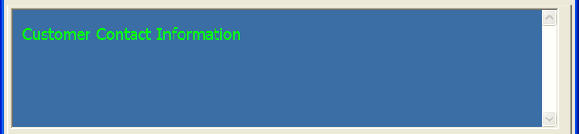
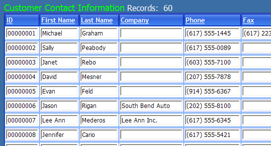

Formatting the Grid
Display the Grid > Properties page.
Selecting Layout Options > Style name >
 > Select style displays the Select style dialog box. You can preview and select the Cascading Style Sheet that you would like to apply to the grid.
> Select style displays the Select style dialog box. You can preview and select the Cascading Style Sheet that you would like to apply to the grid.Select "WinXP" and click OK.
Selecting a Different Record Navigator
The <span class=Screen>Record Navigator Designer</span> displays a large number of pre-defined navigator styles for you to choose from. This dialog also allows you to modify the default navigator styles and create new navigator styles.
Click the
 button in the Record Navigator > Record navigator layout field to display the Record Navigator Designer.
button in the Record Navigator > Record navigator layout field to display the Record Navigator Designer.Select the
 Pre-Defined Format and click OK.
Pre-Defined Format and click OK.
Freeform text is ordinary HTML content that is placed above, below, to the left, or to the right of the grid. The advantage of freeform text is that it is always with the grid, no matter which page you place it on.
Click the
button in the Freeform Edit Regions > Above grid field to display the HTML Editor.Enter "Customer Contact Information".
Select the text and change the size to "4 (14pt)".
Click to apply a color to the text.

Click Save. The grid should now look something like this.

See Also
Contents, Setting Grid Properties